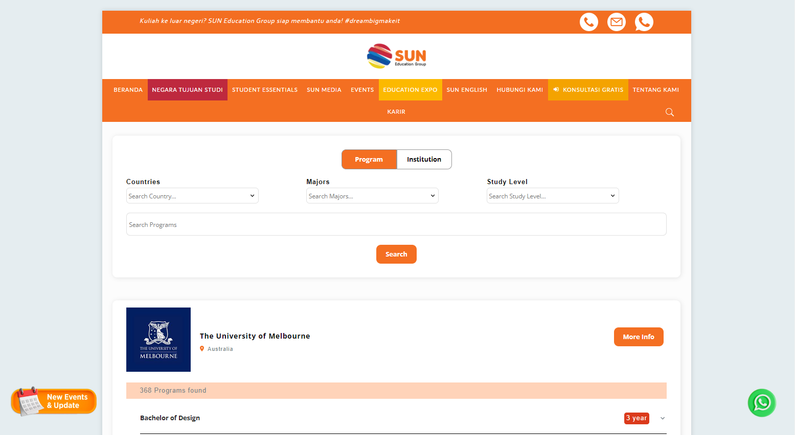

Sunedu Project
Konsultan pendidikan di Indonesia dengan bimbingan baik yang ditawarkan Sunedu, para siswa dimudahkan untuk lanjut ke jenjang selanjutnya baik itu ke luar negeri atau pun dalam negeri. Saya tidak akan membahas dalam tentang Sunedu, melainkan fitur yang saya buat untuk memudahkan para siswa dalam mencari program atau institution yang akan mereka tuju. Selain pencarian institution atau program, saya membuat page country detail untuk mendapatkan informasi lebih lengkap tentang negara tujuan para siswa.
Di sini saya tidak menggunakan teknologi apapun kecuali JavaScript karena pada dasarnya website sunedu dibuat menggunakan WordPress. Sehingga fitur yang saya buat custome menggunakan JavaScript.
Teknologi Yang Diguakan
Front-End
- JavaScript.
- WordPress.
Find Programs/Institutions
.png)
.png)
.png)
Gambar pertama adalah fitur Search untuk mencari Programs/Institutions, user bisa mencari Programs/Institutions secara spesifik dengan melakukan filter atau mencari langsung dengan mengetik nama program/institution langsung. Data list ini adalah data Institutions dengan program yang tersedia di setiap Institution, setiap program bisa dilihat detail informasi seperti Application Fee, Tution, Intake, Level of study. User/Siswa juga bisa melakukan compare dengan program lainnya meskipun beda Institution. Jika User/Siswa tertarik dengan salah satu Institution/Prgoram, bisa dilihat detail untuk mendapatkan informasi lebih lanjut.
Institution Detail
.png)
Country Detail
.png)
.png)